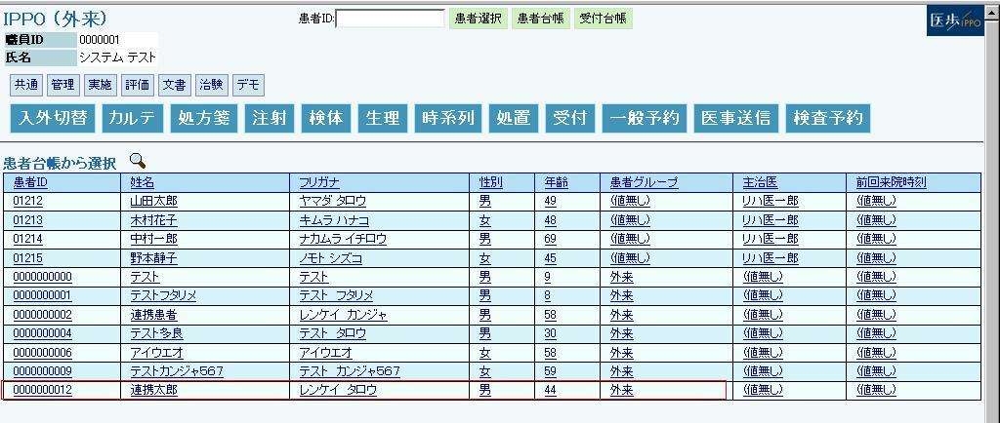

１４－１ 患者台帳連携
（１） 医事会計システム（以下ORCA）を起動します
（２） 管理メニューが表示されるので「12 登録」をクリックします
（３）患者基本情報入力部が表示されますので、画面左上に「＊」を入力します
（４）患者番号が自動的に発番されますので必要項目を入力します

（５）入力が完了しましたら登録ボタンをクリックします
入力必須項目は患者氏名、性別、生年月日です
（６）以上の作業でIPPO側へ患者情報が連携されます
１４－２ IPPO患者選択
（１） IPPOにログインして患者台帳をクリックします

（２） ORCAで登録した患者がIPPO側にきていることを確認し、連携された患者をクリックします
１４－３ オーダ送信
（１） 処方オーダ画面を開きオーダを登録します（詳しくは４ 薬剤処方を参照してください）
（２）医事送信/登録ボタンをクリックした時点で、ORCAへ請求データが送信されます
１４－４ ORCAオーダ受信
（１）ORCATOP画面から「21 診療行為」をクリックします
（２）算定したい患者IDを画面左上に入力し、中途表示ボタンをクリックします
（３）IPPOで送信されたデータが1行表示されますので、確定ボタンをクリックします
（４）IPPOで登録されたオーダ内容がそのまま表示されますので宜しければ登録をクリックし、会計を行います。